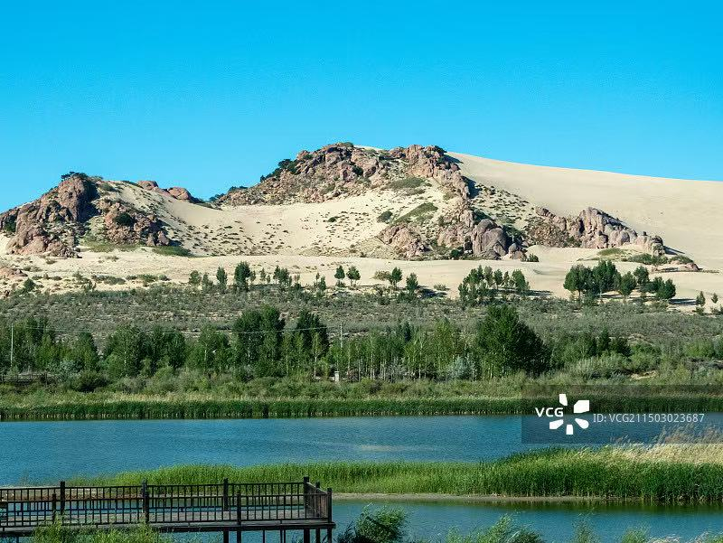
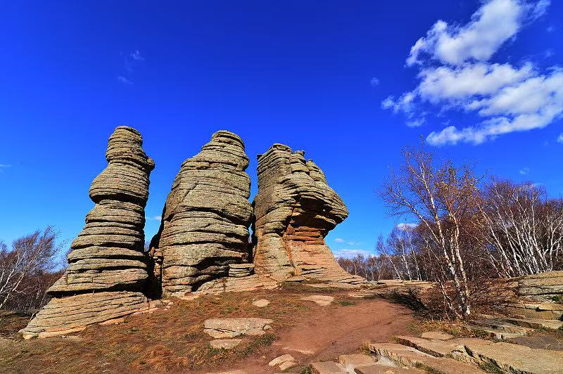
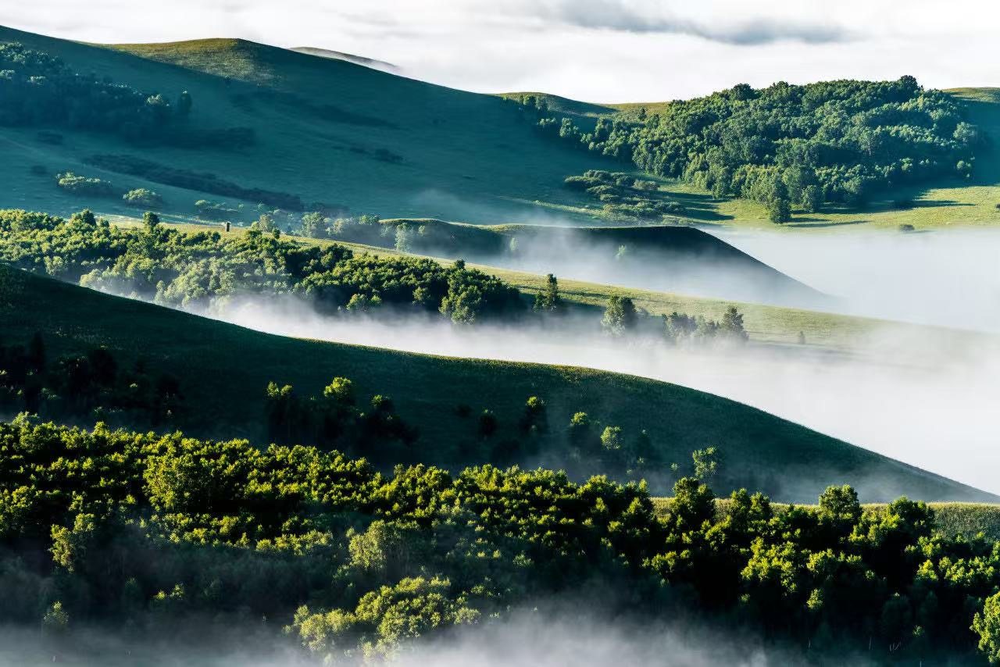
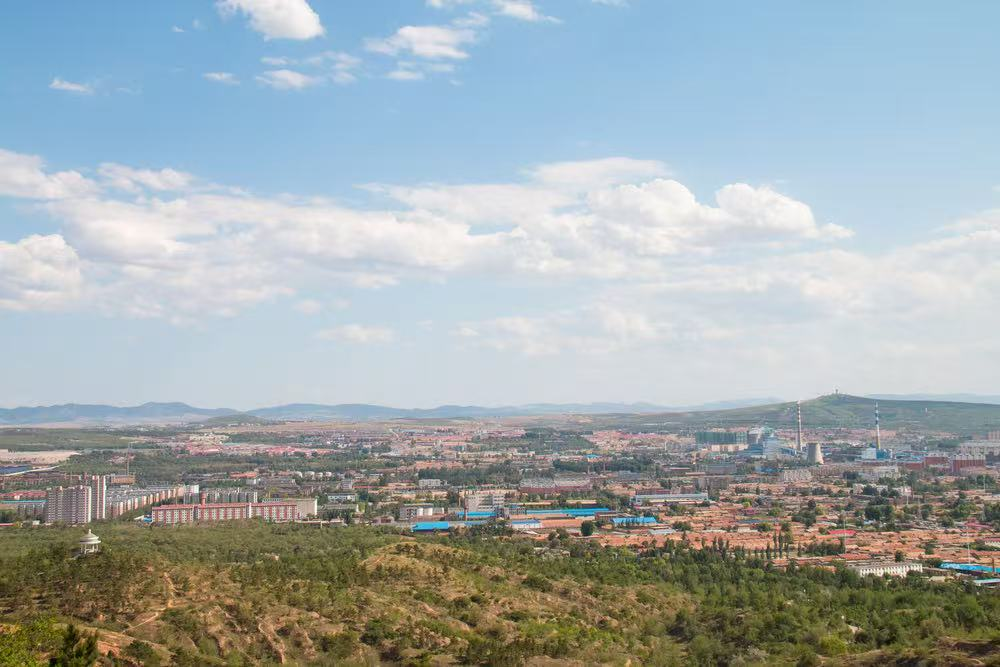
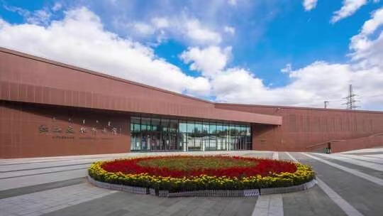

赤峰文旅
🕐 最佳季节：6-10月
🌡️ 夏季均温：20°C
🧥 早晚温差大备外套
📸 日出日落最出片







Day1：抵达赤峰 → 赤峰博物馆（了解红山文化）→ 红山国家森林公园
Day2：乌兰布统草原全天深度游（骑马、越野、篝火晚会、住蒙古包）
Day3：清晨草原日出 → 公主湖 → 影视外景基地 → 返程
Day1：抵达赤峰 → 红山文化博物馆 → 市区美食
Day2：乌兰布统草原（将军泡子、五彩山、公主湖）→ 草原晚宴
Day3：达里诺尔湖观鸟 → 贡格尔草原 → 热水塘温泉
Day4：阿斯哈图石林全天游览 → 黄岗梁国家森林公园
Day5：玉龙沙湖（滑沙骑骆驼）→ 返程
Day1-2：赤峰市区（博物馆、红山公园）→ 乌兰布统草原两日深度体验
Day3：达里诺尔湖 → 贡格尔草原 → 夜宿蒙古包
Day4：阿斯哈图石林 → 黄岗梁 → 热水塘温泉泡汤
Day5：玉龙沙湖 → 沙漠越野 → 沙湖日落
Day6-7：克什克腾旗深度探索 → 草原骑马 → 那达慕体验 → 满载返程
草原返青、杜鹃花漫山遍野，达里诺尔湖候鸟北归，观鸟最佳季节。
草原最美的季节，那达慕大会盛大举行，均温20℃，避暑胜地。
白桦金黄枫叶火红，五彩山斑斓如画，摄影爱好者的黄金季节。
雪原茫茫雾凇晶莹，达里诺尔湖冬捕壮观，体验纯粹北国冬日。
欧式草原风光，影视取景圣地，距北京最近的大草原，骑马驰骋不容错过。
世界地质公园，独一无二的花岗岩石林地貌，亿万年冰川雕琢的自然奇迹。
内蒙古四大内陆湖之一，春秋候鸟天堂，华子鱼洄游与湖上日落令人难忘。
沙湖相连的塞外奇观，沙漠越野、滑沙骑骆驼，中华第一龙出土地。
大兴安岭最高峰，四季风光如画，秋季层林尽染，冬季雾凇奇观。
了解红山文化与契丹辽文化的绝佳起点，馆藏珍贵文物，免费参观。
蒙古族最高待客礼仪，外酥里嫩，是草原盛宴的压轴大菜。
清水煮羊肉保留最本真鲜美，一手把肉一刀持刀，豪迈草原吃法。
砖茶加鲜奶熬制咸香浓郁，牧民一日不可无茶，待客的第一道礼。
纯鲜牛奶发酵制成奶香浓郁，可生食可油炸，草原特色伴手礼。
草原黄牛后腿肉自然风干，嚼劲十足越嚼越香，驰名中外草原名产。
达里诺尔湖特产，肉质细嫩鲜美，每年洄游季节最为肥美好吃。
北京自驾约5h走大广高速；高铁赤峰站约2.5h；玉龙机场直飞京沪等地。
草原蒙古包必体验；市区推荐新城区星级酒店；景区周边特色民宿性价比高。
草原昼夜温差大（可达15℃），夏季也需长袖外套，防晒霜墨镜遮阳帽必备。
旺季提前订住宿；草原信号弱提前下离线地图；尊重蒙古族风俗，进包不踩门槛。